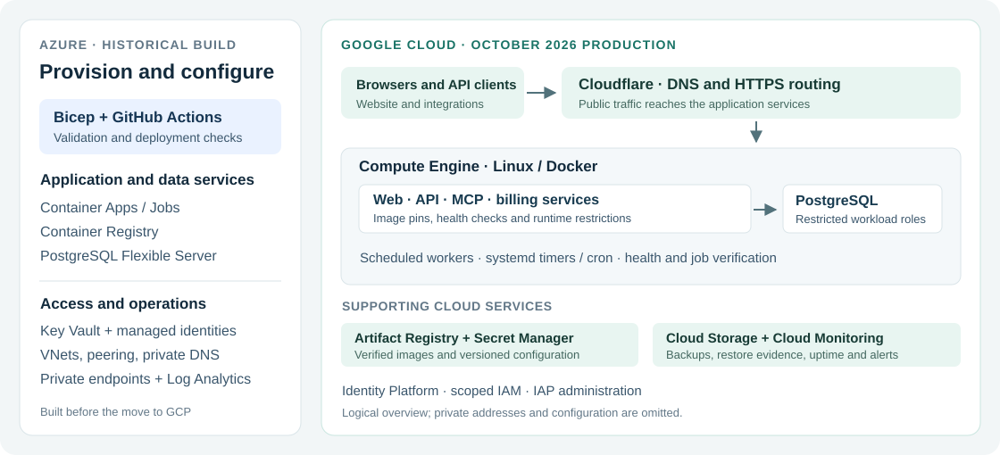

TradeProofCloud / Platform Support
A practical engineering case study
Building and operating
a cloud platform
Azure infrastructure. Google Cloud production.
Hands-on deployment, troubleshooting and recovery.
Jeff CadetCloud / Platform Support Engineer · October 2026
I built and supported the cloud environment behind TradeProof, a contractor license and insurance verification platform. My responsibilities covered provisioning, containers, networking, identity, databases, monitoring and production support.
9.5MLicense records at the
October 8 launch capture
21CI checks passed for the
October 11 release
2 cloudsAzure build and
Google Cloud operations

Logical overview of services I worked with; private infrastructure details are omitted. The two clouds represent stages of the project, not an active-active deployment.
Project context. V1.2 was initially built on Azure, then released on Google Cloud on October 8, 2026. The older V1.1 service also ran on GCP; the final production cutover and data reconciliation occurred between those GCP environments.
TradeProofInfrastructure and operations
Build, configure and support
Work across the platform
From cloud resource configuration to the behavior of the running service.
Historical environment
Microsoft Azure
- Built reusable Bicep modules and validated deployment changes.
- Deployed Container Apps and Jobs, with images in Azure Container Registry.
- Provisioned PostgreSQL Flexible Server with public network access disabled.
- Configured VNets, peering, private endpoints and private DNS.
- Worked with Key Vault, managed identities and scoped role assignments.
- Used Log Analytics to investigate application and scheduled-job failures.
October 2026 production
Google Cloud
- Operated Linux Compute Engine hosts and containerized services.
- Published verified Docker images to Artifact Registry using immutable references.
- Managed private objects and backups in Cloud Storage.
- Maintained versioned recovery configuration in Secret Manager.
- Worked with IAM, Identity Platform and IAP for service and administrative access.
- Configured Cloud Monitoring uptime checks and alerts, with a confirmed delivery test.
Day-to-day engineering responsibilities
Container and release supportBuilt images, checked runtime dependencies, diagnosed startup failures and verified health before activation.
Networking and accessTroubleshot private connectivity, DNS, HTTPS routing, service identity and database permission failures.
CI/CD and automationMaintained GitHub Actions validation, automated API checks, secret scanning and image vulnerability scans.
Database and recovery operationsManaged PostgreSQL migrations, permissions, backup verification and restores on isolated infrastructure.
Security operationsApplied restricted runtime permissions, staff RBAC, passkey verification and audited access changes.
Documentation and cost controlMaintained runbooks, reviewed compute/storage/CI usage and removed temporary recovery resources after verification.
Tools used: Linux, Docker, PostgreSQL, Bicep, GitHub Actions, Python, Bash, PowerShell, Cloudflare, Trivy and automated browser/API checks.
TradeProofProduction support
Symptom → diagnosis → verified fix
Three support investigations
Examples of resolving the failure and checking the resulting behavior.
01 / AZUREProvisioned, but failing at runtime
Symptom: A scheduled Key Vault reminder job failed repeatedly even though the cloud resource reported successful provisioning.
Diagnosis: Log Analytics showed a missing Python module. The Key Vault SDK was installed for development but absent from the runtime image.
Action: Added the runtime dependency, rebuilt the image and verified imports inside the packaged container before deployment.
Verified result: A manual execution succeeded, followed by a successful scheduled run on July 3, 2026. Resource provisioning status alone was insufficient.
02 / GCPA backup upload that hid its failure
Symptom: Cloud Storage contained checksum files without the corresponding database dump files.
Diagnosis: The Cloud SDK could not write local tracking files. The script used the subsequent checksum upload's successful exit status and removed the local dump.
Action: Set a writable SDK configuration directory, checked each upload result and required remote-object verification before deleting local staging files.
Verification: The revised workflow checked actual uploaded artifacts. Later isolated restores separately tested usable backups, database contents and application startup.
03 / RECOVERYSaved configuration no longer matched
Symptom: Recovery configuration had drifted from the deployed services, and a backup manifest still referenced an older, stopped API container.
Diagnosis: Compared running containers and private configuration files with explicit Secret Manager versions and the backup manifest.
Action: Updated recovery versions and the backup reference while retaining the previous versions.
Verified result: All nine configuration files matched their cloud versions. Separate checks confirmed serving services, database permissions and schedules were unchanged.
TradeProofRelease and recovery
Measured results, with scope
Verify before calling it done
A release process that checks both the artifact and the running workload.
01 · VALIDATETests, dependency checks and image scans
02 · PREPAREImage pins, backups and production canaries
03 · ACTIVATEOrdered deployment and health checks
04 · VERIFYRuntime readback and scheduled-job results
| Recorded result | What was verified |
|---|
| October 8 launch | Full source and target restores, data reconciliation, five healthy application services and public checks before closeout. |
| 21 CI checks passed | October 11 release. The 19 required branch checks and strict policy remained unchanged. |
| 8,879 backend tests | Passed for the same release, with reported test coverage of 89.04%. |
| Image security checks | Zero fixable HIGH/CRITICAL findings in the exact API and web images under the existing scan policy. |
| 7m 43s recovery drill | September 26 isolated snapshot restore: five apps, public search/navigation and one quota-write check. Authenticated sessions and external-provider recovery were outside this result. |
Operational decisions that mattered
The October 8 launch used a planned maintenance window. Once the target accepted production writes, the earlier source remained fenced against writes. A DNS-only reversal could not safely restore the earlier state; recovery required reconciliation.
The October 11 release checked canaries against production configuration, deployed dependencies in order, verified running image identities and observed a successful scheduled worker run. Synthetic API-key checks covered customer authentication behavior without using a live customer's quota.
Evidence scope. Compiled from project task closures, deployment records, CI output and recovery receipts reviewed on October 12, 2026. The figures describe those recorded events. They do not establish audited availability, SOC 2 certification or a guaranteed recovery time. Detailed operational records remain private.